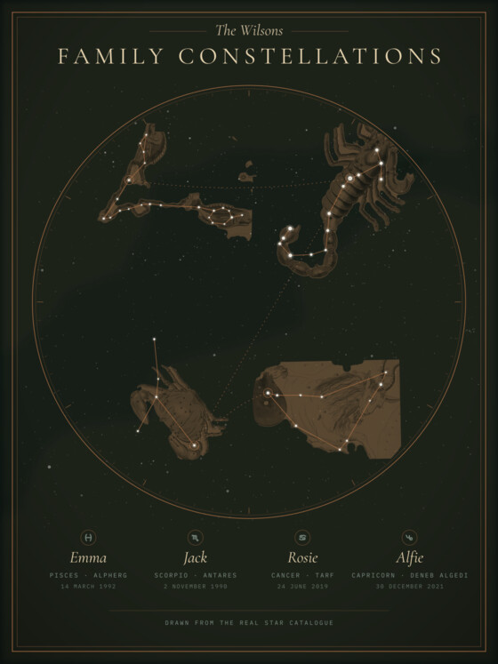
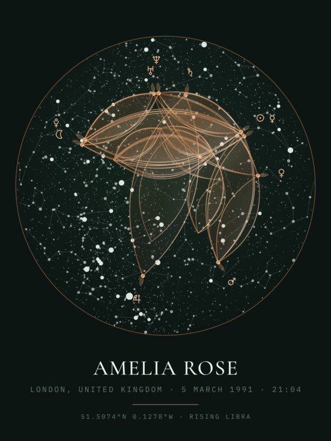
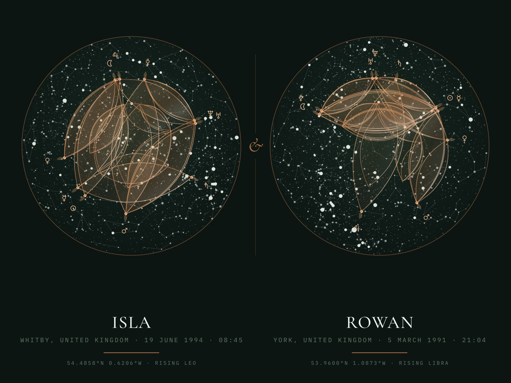

For parents & grandparents
The whole family, together.
A constellation for each person, brought together on one print. For two to six people.
You’ll need: first names and birthdays. No birth times or places.
Prints from £34.99
Create a family giftChristmas at Ortus Atelier
Their names. Their beginnings. Your family, together. Give them a personal piece of art to keep long after Christmas.
Prints from £34.99 · Free UK & US delivery
Find their giftPersonalise online · Preview by email before printing

Three ways to make it personal
For parents & grandparents
A constellation for each person, brought together on one print. For two to six people.
You’ll need: first names and birthdays. No birth times or places.
Prints from £34.99
Create a family gift
For someone special
A birth chart drawn for their date, time and place, with their name beneath it.
You’ll need: their name, birth date, birth time and birthplace.
Prints from £34.99
Create a birth chart
For the two of you
Both birth charts side by side on a single landscape print — a gift about the two of you.
You’ll need: a name, birth date, time and birthplace for each person.
Prints from £34.99
Create a couple giftFrom your idea to their wall
A little Christmas planning
Made to order, with dispatch normally in 3–6 working days and tracked UK or US delivery included. Allow time for preview checks and any changes, as well as delivery.
Christmas 2026 ordering deadlines are not yet confirmed. Order early; if you need a particular arrival date, ask us before ordering.
Ask about your gift →Before you choose
Choose Family Constellations: it needs first names and birthdays for two to six people. Each constellation represents a zodiac sign based on calendar dates, rather than a full birth chart.
A name, birth date, birth time and birthplace. The couple print needs those details for both people. If you only know an approximate time, the chart reflects that chosen time; it does not establish the actual time of birth.
Personalise and view your design online. After payment, we email the print preview so you can check the details before production. Please reply promptly if anything needs changing.
Order early and allow time for preview checks, production and delivery. We have not confirmed Christmas 2026 ordering deadlines yet. Contact us before ordering if you need your gift for a particular date.
Prints start at £34.99 without a frame. Classic framed options start at £69.99, with black, gold or silver frames. Free UK and US delivery is included. Your chosen format and final price are shown before payment.
More answers: What do you need to order?